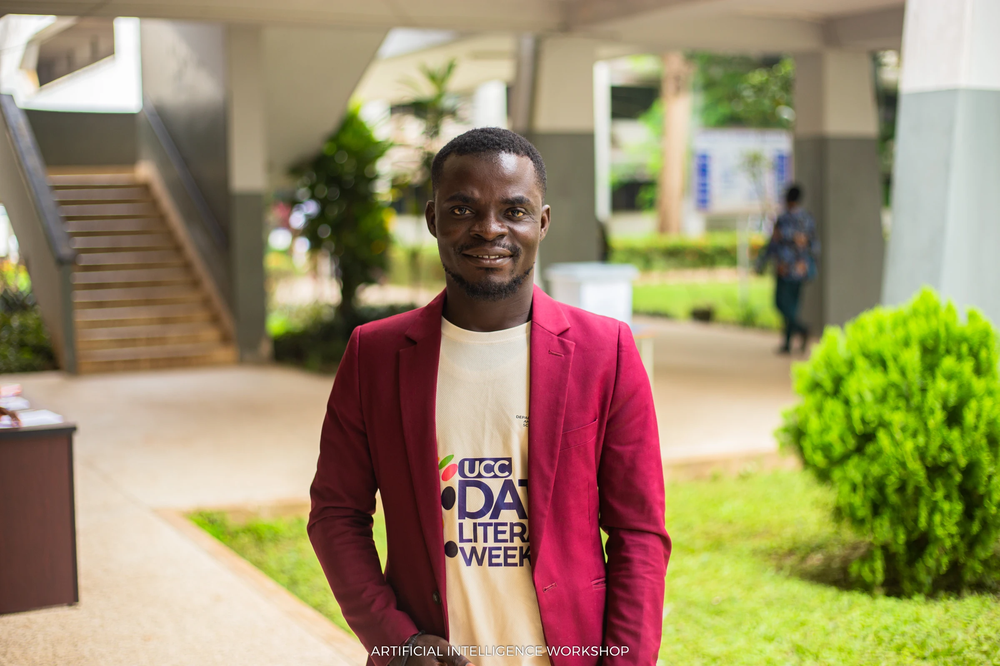

Flagship programme · 2026
UCC Data Literacy Week 2026
Contributed to the organising and implementation of a Bank of Ghana-sponsored multi-component initiative under the theme Building a Data-Smart Ghana: Evidence, Ethics and Inclusion.
400+Online learners in foundational Data Science and AI training
130+SHS students reached through mentorship
500+Stakeholders at the final conference
The programme connected stakeholder consultation, teacher and mentor preparation, online training, Senior High School mentorship, community outreach to artisans and traders, and a national stakeholder conference involving major public institutions.